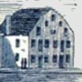

by
Stefan Bielinski
New Yorker Richard Lush was the brother and associate of Revolutionary leader and New York State officeholder Stephen Lush.
By 1775, he had followed his brother to Albany and had joined the crusade for American liberties as a recruiter. He contributed financially to the cause and served as the "Deputy State Agent for Albany County" - procuring supplies and provisions for the war effort. In 1778, he also served the regular army as deputy mustermaster for the Third Regiment of the New York Line. Too valuable to be spared, he was exempted from military service to keep him involved in the supply side of the war effort.
In 1779, he was sharing a house in the second ward with his brother - by then the secretary to Governor Clinton. Toward the end of the war, he became involved in municipal affairs as assessor, fireman, and then assistant alderman and alderman in the second ward. In the years that followed, he was a prominent participant in Albany's postwar development!
He married Albany native Lyntie Fonda in December 1780. Over the next two decades, seven of their children were baptized in the Albany Dutch church where both parents were members and where Richard was a church officer.
During the 1780s and afterwards, he acquired Albany real properties to support his business initiatives but also for investment purposes. He owned a number of lots along the waterfront and near the northern border of the city. With the end of the war, he began to invest in land that first was granted to soldiers in the Revolutionary army. The latter initiatives were substantial and should be investigated more fully in the future!
By 1790, he had established his own residence in a double house at 62 (later 320) North Market Street. In that year, he was appointed Albany County clerk. This prominent Albany personage served until 1808. In 1811, he was appointed Albany County Surrogate.
Richard Lush died in Albany in May 1817. Letters of administration were issued on his estate two weeks later.
notes
 Sources: The life of Richard Lush is CAP biography
number 1047. This profile is derived chiefly from family
and community-based resources. We seek defining
information on his origins!
Sources: The life of Richard Lush is CAP biography
number 1047. This profile is derived chiefly from family
and community-based resources. We seek defining
information on his origins!
The large building on the west side of Market Street was shared with the hardware store of John Brinkerhoff. Lush's widow lived in the house following his death!
first posted: 11/30/02; last updated 5/22/16